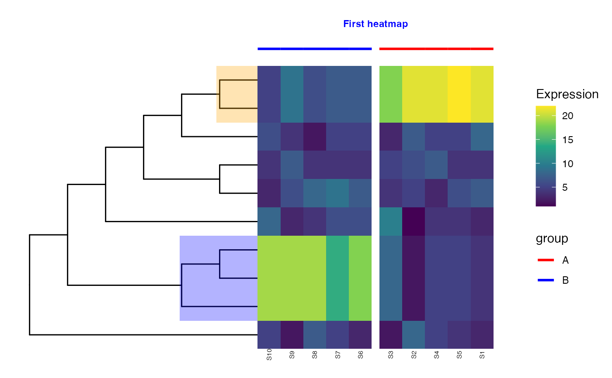
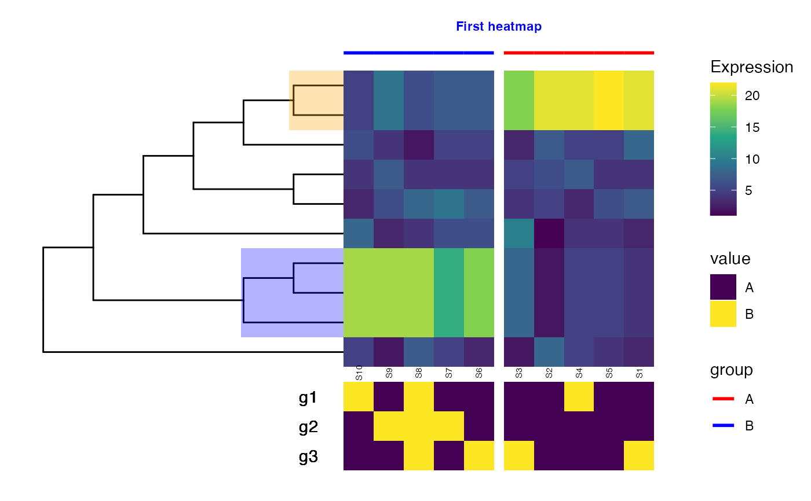

Extract different elements of the data shown in a figure generated with
TreeHeatmap, such as the heatmap itself, or the row and column names.
Usage
getData(
tree_hm,
type = c("heatmap", "row_name", "column_name", "title", "column_anno", "column_order",
"column_split")
)Arguments
- tree_hm
The output of
TreeHeatmap.- type
A character scalar indicating the type of information to extract. Should be one of
"heatmap", "row_name", "column_name", "title", "column_anno", "column_order".
Value
A data.frame (if type is not "column_order"), or a
vector of column names (if type is "column_order").
Examples
suppressPackageStartupMessages({
library(TreeSummarizedExperiment)
library(ggtree)
library(ggplot2)
library(scales)
library(dplyr)
library(ggnewscale)
})
## Load example data (tiny tree with corresponding count matrix)
tse <- readRDS(system.file("extdata", "tinytree_counts.rds",
package = "treeclimbR"))
## Aggregate counts for each of the highlighted subtrees
tseagg <- aggTSE(
tse,
rowLevel = c(13, 18,
setdiff(showNode(tinyTree, only.leaf = TRUE),
unlist(findDescendant(tinyTree, node = c(13, 18),
only.leaf = TRUE)))))
ct <- SummarizedExperiment::assay(tseagg, "counts")
col_split <- ifelse(colnames(ct) %in% paste0("S", seq_len(5)), "A", "B")
names(col_split) <- colnames(ct)
## Prepare the tree figure
tree_fig <- ggtree(tinyTree, branch.length = "none",
layout = "rectangular") +
geom_hilight(node = 18, fill = "orange", alpha = 0.3) +
geom_hilight(node = 13, fill = "blue", alpha = 0.3)
fig <- TreeHeatmap(
tree = tinyTree, tree_fig = tree_fig, hm_data = ct,
cluster_column = TRUE, column_split = col_split,
column_anno = col_split, column_anno_gap = 0.6,
column_anno_color = c(A = "red", B = "blue"),
show_colnames = TRUE, colnames_position = "bottom",
colnames_angle = 90, colnames_size = 2, colnames_offset_y = -0.2,
show_title = TRUE, title_offset_y = 1.5, title_color = "blue"
)
fig

## Extract data for heatmap
df_hm <- getData(tree_hm = fig, type = "heatmap")
## Generate data to add a column annotation
ct <- df_hm |>
dplyr::select(x, width, variable) |>
dplyr::distinct()
set.seed(1)
ann <- matrix(sample(LETTERS[seq_len(2)], size = 3 * ncol(df_hm),
replace = TRUE),
nrow = 3)
rownames(ann) <- paste0("g", seq_len(3))
colnames(ann) <- ct$variable
ann <- data.frame(ann) |>
mutate(y = min(df_hm$y) - seq_len(nrow(ann)),
label = rownames(ann))
df_ann <- tidyr::pivot_longer(
ann, names_to = "variable",
values_to = "value", cols = -c("y", "label")) |>
left_join(ct)
#> Joining with `by = join_by(variable)`
## Add new column annotation
fig +
new_scale_fill() +
geom_tile(data = df_ann, aes(x, y-0.5,
width = width, fill = value)) +
scale_fill_viridis_d() +
geom_text(data = df_ann, aes(x = min(x) - 1, y = y - 0.5,
label = label))
